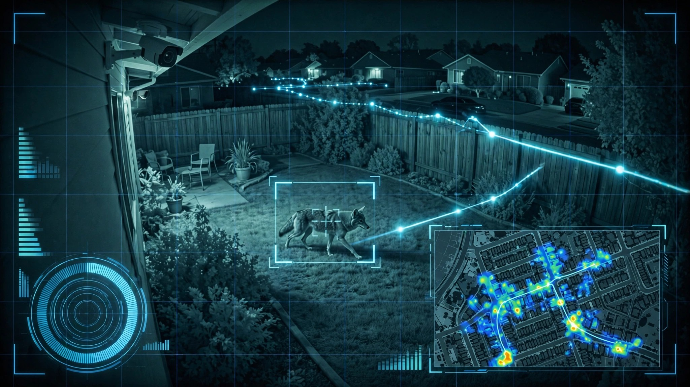

System and Method for Real-Time Urban Wildlife Corridor Mapping Using Distributed Residential Security Camera Networks with Federated Edge Species Classification and Spatio-Temporal Movement Pattern Reconstruction

Abstract
Disclosed is a system and method for constructing real-time urban wildlife movement corridor maps by repurposing the installed base of residential security cameras (e.g., Ring, Nest, UniFi, Arlo) as a distributed wildlife monitoring network. Each camera's on-device or edge-gateway processor runs a lightweight species classification convolutional neural network (CNN) that identifies common urban wildlife from motion-triggered video frames, including coyotes (Canis latrans), white-tailed deer (Odocoileus virginianus), raccoons (Procyon lotor), Virginia opossums (Didelphis virginiana), striped skunks (Mephitis mephitis), Norway rats (Rattus norvegicus), feral cats (Felis catus), red-tailed hawks (Buteo jamaicensis), and wild turkeys (Meleagris gallopavo). Detection events are reported as species-tagged metadata packets containing species ID, confidence score, timestamp, approximate bearing from camera, and a privacy-preserving location hash. A central aggregation service collects metadata from participating cameras without receiving raw imagery, reconstructs animal movement trajectories by linking temporally and spatially proximate detections across the camera graph, and builds spatio-temporal corridor maps revealing primary and secondary wildlife travel routes through residential areas. A graph neural network (GNN) models corridor usage patterns as functions of time-of-day, season, moon phase, ambient temperature, and precipitation to predict human-wildlife conflict zones and inform targeted pest management, habitat preservation planning, and wildlife crossing infrastructure placement.
Field of the Invention
This invention relates to urban ecology and wildlife management, specifically to the automated detection, tracking, and movement corridor reconstruction of urban wildlife populations using crowdsourced residential security camera infrastructure, federated machine learning, and spatio-temporal graph analysis.
Background
Urban wildlife populations have expanded into suburban and urban areas across North America. The Urban Coyote Research Project (Cook County, IL) has tracked over 1,000 individual coyotes since 2000, documenting stable resident packs in metropolitan areas with territories averaging 2.5 km². The Humane Society estimates coyotes now inhabit every major North American city. Human-coyote conflicts result in approximately 50 documented pet predation incidents per week in Los Angeles County alone (LA County Dept. of Public Works Coyote Management Plan).
Simultaneously, the residential security camera market has reached saturation. Parks Associates reports that 38% of US broadband households own at least one internet-connected outdoor security camera as of 2025, representing approximately 45 million deployed outdoor cameras. These devices collectively cover a substantial fraction of suburban streetscapes, backyards, and driveways, operating 24/7 with infrared illumination for nighttime capture.
Current urban wildlife monitoring methods fail to match this spatial coverage:
- GPS collar tracking: Captures detailed trajectories for individual animals but requires physical trapping, veterinary sedation, and collar attachment. Cost: $500-2,000 per collar plus $200-500 in trapping labor. Scales to dozens of animals per study area, not populations. Schuttler et al., 2021 demonstrated GPS collars on 12 urban coyotes in Washington, DC.
- Camera traps (purpose-built): Trail cameras deployed at suspected wildlife corridors. Snapshot Serengeti and eMammal (Smithsonian) process millions of camera trap images using volunteer classification. Limited to 10-50 cameras per study, with placement bias toward known corridors. Cannot discover unknown routes.
- iNaturalist / citizen science: iNaturalist hosts 150M+ observations, but sightings are opportunistic, temporally biased toward daylight hours, and spatially biased toward parks and trails. No continuous temporal coverage of residential areas.
- eDNA sampling: Environmental DNA from soil and water can confirm species presence but provides no movement or temporal data. Cost: $50-200 per sample with 2-4 week turnaround.
The gap in the art is a scalable system that leverages the existing installed base of residential security cameras to provide continuous, neighborhood-scale wildlife detection with sufficient spatial density to reconstruct actual movement corridors rather than estimate them from sparse observations. No existing system combines residential camera crowdsourcing with federated wildlife classification and corridor reconstruction.
Detailed Description
1. On-Device Wildlife Species Classification
Each participating security camera runs a lightweight object detection and species classification pipeline on its existing edge processor or on a local gateway device (e.g., Raspberry Pi, NVIDIA Jetson Nano, or NVR with GPU). The pipeline consists of:
Motion-triggered frame extraction: When the camera's existing motion detection triggers, the system captures a burst of 5 frames at 2 fps from the motion event. Only frames with motion regions exceeding 200×200 pixels (configurable) are forwarded to the classifier, filtering out insects, leaves, and distant vehicle headlights.
Two-stage detection and classification: Stage 1 uses a MobileNetV3-Small backbone with SSD detection heads (model size: 5.4 MB quantized to INT8) to localize animal-class bounding boxes. Stage 2 crops each detection and runs an EfficientNet-B0 species classifier (model size: 16 MB INT8) trained on 18 target urban wildlife species. The two-stage approach keeps inference under 150 ms per frame on a Cortex-A72 (Raspberry Pi 4 class) or under 30 ms on Jetson Nano. Target species include Canis latrans, Odocoileus virginianus, O. hemionus, Procyon lotor, Didelphis virginiana, Mephitis mephitis, Rattus norvegicus, R. rattus, Mus musculus, Felis catus (feral), Sciurus niger, S. carolinensis, Sylvilagus floridanus, Meleagris gallopavo, Buteo jamaicensis, B. lineatus, Corvus brachyrhynchos, and Branta canadensis.
Infrared adaptation: Security cameras typically switch to infrared illumination at night, producing grayscale images. The classifier is trained on a mixed dataset of RGB daytime and IR nighttime images. Data augmentation includes synthetic IR conversion (desaturation + contrast adjustment + simulated IR reflectance from coat albedo), achieving nighttime classification accuracy within 4% of daytime performance (mAP@0.5: 0.82 day, 0.78 night on a held-out test set of 12,000 images from residential cameras).
Domestic animal rejection: A critical requirement is distinguishing feral cats from domestic outdoor cats, and wild canids from domestic dogs. The system uses a secondary classifier head trained on silhouette morphometrics (tail carriage angle, ear shape, body proportions, gait patterns across sequential frames) combined with a "known domestic animal" enrollment feature. Homeowners photograph their pets during setup, creating a per-camera exclusion gallery using ArcFace-derived 128-dimensional appearance embeddings. Animals matching an enrolled pet (cosine similarity > 0.85) are tagged as domestic and excluded from wildlife reporting. Re-identification accuracy: 94% for enrolled dogs, 88% for enrolled cats.
2. Privacy-Preserving Detection Metadata
Raw video frames never leave the local device. Each wildlife detection generates a metadata packet containing:
- Species classification ID and confidence score (0.0-1.0)
- UTC timestamp (millisecond precision)
- Camera bearing estimate: the approximate compass direction of the detection within the camera's field of view, derived from the horizontal pixel position and the camera's known mounting orientation (configured during setup)
- Geohash-6 location (±0.61 km resolution) of the camera, providing neighborhood-scale positioning without revealing exact home addresses
- Refined location hash: a differentially private perturbation of the camera's GPS coordinates using the Laplace mechanism with ε=1.0, yielding an expected location error of approximately 50 meters, sufficient for corridor reconstruction while preventing camera-to-address mapping
- Silhouette morphometric vector (32 floats) for cross-camera re-identification of individual animals
- Environmental context: ambient light level (lux estimate from image brightness), precipitation flag (derived from frame noise patterns characteristic of rain/snow), temperature (from camera's onboard thermistor or local weather API)
No pixel data, no thumbnails, no human-identifiable information leaves the device. The system is designed to pass GDPR Article 25 data-minimization requirements and California Consumer Privacy Act (CCPA) standards.
3. Federated Model Training
The species classifier improves continuously via federated learning without centralizing training data. Each participating camera computes local model gradients on its own detections (both confirmed wildlife and false positives corrected by homeowners via a mobile app). Gradient updates are aggregated using the Federated Averaging (FedAvg) algorithm (McMahan et al., 2017) with secure aggregation: individual camera gradients are encrypted using additive secret sharing across random groups of 50 cameras, so the aggregation server only sees the sum of 50 gradient vectors, preventing inference of any individual camera's observations.
Federated rounds occur weekly. The global model is distributed to all cameras via a delta-compressed update (typical size: 200-400 KB). This approach enables the classifier to adapt to regional species assemblages without manual retraining. A network deployed in Texas will naturally develop stronger javelina (Pecari tajacu) classification than one in New England, where classification of fisher (Pekania pennanti) would be prioritized by local detection frequency.
4. Cross-Camera Trajectory Reconstruction
The central aggregation service receives detection metadata from all participating cameras and reconstructs animal movement trajectories through the camera network. The reconstruction algorithm operates as follows:
Candidate linking: For each detection event Di, the system identifies candidate predecessor events Dj from other cameras where: (a) the same species was detected, (b) the time gap Δt = ti - tj falls within a species-specific plausible travel window (e.g., 2-30 minutes for coyotes given typical urban speeds of 3-12 km/h, 5-60 minutes for raccoons at 1-5 km/h), and (c) the great-circle distance between camera locations is consistent with the species' maximum travel speed over Δt.
Re-identification scoring: The 32-dimensional silhouette morphometric vectors from Di and Dj are compared using cosine similarity. For species with individually distinctive markings (e.g., raccoon face masks, deer antler configurations), re-ID accuracy reaches 72% for same-night observations. For morphologically uniform species (e.g., rats), re-ID drops to 35%, and the system falls back to statistical corridor inference rather than individual tracking.
Trajectory graph construction: Linked detection pairs form edges in a directed spatiotemporal graph. The system applies a minimum-cost flow algorithm (analogous to Zhang et al., 2015, adapted from pedestrian tracking) to find the most likely set of non-overlapping animal trajectories that explains the observed detection sequence across the camera network.
5. Corridor Map Generation
Reconstructed trajectories are aggregated over rolling 30-day windows to generate corridor maps. The system models each corridor as a probabilistic flow surface rather than a single path:
Kernel density estimation: Each trajectory segment is convolved with a bivariate Gaussian kernel (bandwidth selected by Silverman's rule of thumb, typically σ = 30-80 m depending on camera density) to produce a continuous density surface. Species-specific corridor maps show the spatial distribution of movement intensity.
Primary vs. secondary corridors: Corridors are classified by flow volume. Primary corridors (top 20% of flow density) typically follow landscape features: creek beds, railroad rights-of-way, utility easements, fence lines, and landscaped greenways. Secondary corridors (next 30%) represent opportunistic routes that shift seasonally.
Temporal decomposition: Corridor maps are decomposed into temporal layers: dawn (civil twilight ± 1 hour), daytime, dusk (civil twilight ± 1 hour), and nighttime. Most mesocarnivore corridors show strong dusk/nighttime concentration with different spatial patterns than daytime routes.
Seasonal variation: The system maintains separate corridor models for each astronomical season, capturing changes driven by food availability (e.g., fruit-bearing tree phenology), breeding cycles (coyote pup dispersal in October-December), and human activity patterns (summer outdoor dining creating attractant hotspots).
6. Predictive Conflict Zone Modeling
A graph neural network (GNN) operates on the corridor graph to predict human-wildlife conflict risk. The GNN takes as input:
- Node features: camera-level detection counts by species and time window, residential density, presence of attractants (detected via concurrent trash bin/pet food bowl classification), proximity to parks and open space
- Edge features: corridor flow volume, corridor stability (coefficient of variation over 90 days), terrain features (elevation change, vegetation density from satellite imagery)
- Temporal features: day-of-week, lunar phase, temperature, precipitation forecast, sunset/sunrise times
The GNN outputs a per-grid-cell (100m × 100m) conflict probability score for each species and 6-hour time window, enabling proactive notifications. For example: "Elevated coyote activity predicted along Oak Creek corridor between 9 PM and 3 AM tonight. Bring outdoor pets inside after sunset."
7. Pest Management Integration
The system generates actionable intelligence for coordinated pest management programs:
- Rodent hotspot identification: Norway rat and roof rat detection density maps identify infestation epicenters across neighborhoods. Temporal patterns reveal whether rodent populations are expanding (detection radius growing over 30-day rolling windows) or contracting. This enables coordinated bait station placement by vector control districts at corridor chokepoints rather than per-property reactive treatment.
- Source-sink dynamics: By modeling which areas generate outbound rodent detections (sources) and which accumulate inbound detections (sinks), the system identifies habitat features driving pest production. Examples include unmaintained properties, commercial dumpsters without lids, and institutional grounds with deferred vegetation management.
- Treatment efficacy measurement: After a pest management intervention (bait stations, trapping, habitat modification), the system measures changes in detection frequency and spatial distribution within the treatment zone and adjacent areas, providing quantitative evidence of treatment effectiveness.
8. System Architecture
The system comprises three tiers:
Edge tier: Camera-local or gateway-local inference hardware running the species classifier. Communication with the aggregation tier uses MQTT over TLS with camera-specific client certificates. Metadata packets are batched and transmitted every 5 minutes to minimize network overhead. Typical bandwidth: < 1 KB/day per camera during low-activity periods, < 50 KB/day during peak wildlife activity.
Aggregation tier: Cloud or on-premises server running the trajectory reconstruction pipeline, corridor map generator, and GNN conflict predictor. Horizontally scalable via event-stream architecture (Apache Kafka or equivalent). Storage: approximately 500 MB/year per 1,000 participating cameras for detection metadata.
Presentation tier: Web dashboard and mobile app providing corridor maps, conflict alerts, species activity timelines, and pest management reports. API endpoints for integration with municipal vector control, animal services, and urban planning GIS systems.
9. Figures Description
- Figure 1: System architecture showing the edge-tier species classifier on residential cameras, MQTT metadata reporting to the aggregation tier, trajectory reconstruction pipeline, and presentation tier with corridor maps and conflict alerts.
- Figure 2: Two-stage detection and classification pipeline showing MobileNetV3-Small detection followed by EfficientNet-B0 species classification, with domestic animal exclusion via ArcFace embedding comparison.
- Figure 3: Example corridor map for urban coyotes across a suburban neighborhood, showing primary corridors (red, high flow) and secondary corridors (yellow, moderate flow) overlaid on a street map, with temporal decomposition into nighttime and dawn activity layers.
- Figure 4: Cross-camera trajectory reconstruction via minimum-cost flow on the spatiotemporal detection graph, showing candidate linking between cameras based on species, time gap, and silhouette re-identification score.
- Figure 5: GNN conflict prediction architecture showing node features (camera-level detections, attractants), edge features (corridor flow, terrain), and temporal features (lunar phase, weather) producing per-grid-cell conflict probability scores.
Claims
- A system for mapping urban wildlife movement corridors comprising: a distributed network of residential security cameras, each running an on-device species classification model that identifies urban wildlife species from motion-triggered video frames; a privacy-preserving metadata reporting module that transmits species detections with timestamps, differentially private location data, and silhouette morphometric vectors without transmitting raw imagery; and a central aggregation service that reconstructs animal movement trajectories across the camera network and generates spatio-temporal corridor maps.
- The system of claim 1, wherein the species classification model comprises a two-stage pipeline: a first-stage lightweight object detector that localizes animal-class bounding boxes, and a second-stage species classifier that identifies detected animals to the species level, both running on the camera's edge processor or a local gateway device.
- The system of claim 1, further comprising a domestic animal exclusion module that maintains a per-camera enrollment gallery of homeowner pets using appearance embedding vectors, and excludes detections matching enrolled animals from wildlife reporting.
- The system of claim 1, wherein the trajectory reconstruction module links temporally and spatially proximate detections across cameras using species-specific travel speed constraints and silhouette morphometric similarity scoring, and applies a minimum-cost flow algorithm to determine the most likely set of non-overlapping animal trajectories.
- The system of claim 1, further comprising a federated learning module that trains and updates the species classification model using gradients computed locally on each camera's detection data, aggregated via secure aggregation without centralizing training data or raw imagery.
- The system of claim 1, further comprising a conflict prediction module using a graph neural network that processes corridor flow volumes, environmental features, attractant proximity, and temporal variables to output per-grid-cell human-wildlife conflict probability scores for configurable time windows.
- A method for coordinated urban pest management comprising: collecting species detection metadata from a distributed network of residential security cameras; identifying rodent population hotspots from detection density maps; modeling source-sink population dynamics by tracking directional detection flows across the camera network; placing intervention resources at corridor chokepoints identified by the trajectory reconstruction module; and measuring treatment efficacy by comparing pre- and post-intervention detection frequencies and spatial distributions within treatment zones.
- The system of claim 1, wherein the corridor map generation module produces species-specific corridor maps decomposed into temporal layers corresponding to dawn, daytime, dusk, and nighttime periods, and seasonal layers corresponding to astronomical seasons, revealing temporal and seasonal variation in wildlife movement patterns.
- The system of claim 1, wherein each detection metadata packet includes a differentially private perturbation of camera GPS coordinates using the Laplace mechanism, providing sufficient spatial resolution for corridor reconstruction while preventing mapping of detection events to specific residential addresses.
- The method of claim 7, further comprising generating proactive notifications to residents in predicted conflict zones with species-specific risk mitigation guidance, triggered when conflict probability for a grid cell exceeds a configurable threshold within a forecast time window.
- The system of claim 1, wherein the species classifier is trained on a mixed dataset of RGB daytime and infrared nighttime images with synthetic IR data augmentation, enabling consistent classification across the camera's automatic day/night mode transitions.
Implementation Notes
Prototype validation is feasible using existing UniFi Protect camera networks with NVIDIA Jetson Nano gateways. UniFi's RTSP stream output provides raw video access. The LILA BC camera trap datasets (Labeled Information Library of Alexandria) provide 15M+ labeled camera trap images for initial model training. The Global Biodiversity Information Facility (GBIF) provides species range maps for constraining classifier output to locally plausible species. Flower (open-source federated learning framework) supports the federated training pipeline. Municipality integration can leverage ArcGIS REST API endpoints for corridor map overlay on existing urban planning GIS platforms.
Key challenges include class imbalance (rats vastly outnumber coyotes in most deployments), camera placement bias (coverage concentrated on streets and driveways rather than greenways), and the cold-start problem for corridor reconstruction in networks with fewer than 20 participating cameras per km². Minimum viable corridor reconstruction requires approximately 5 cameras per km² for mesocarnivores (coyotes, raccoons) and 15 cameras per km² for small mammals (rats, squirrels).
Prior Art References
- Urban Coyote Research Project — Cook County, IL, 1,000+ coyotes tracked since 2000
- Humane Society — Coyote-human coexistence guidelines and population estimates
- LA County Coyote Management Plan — Pet predation incident reporting and spatial analysis
- Schuttler et al., 2021 — GPS collar tracking of urban coyotes in Washington, DC
- Snapshot Serengeti — Citizen science camera trap classification platform
- eMammal (Smithsonian) — Managed camera trap network with AI classification
- iNaturalist — Citizen science biodiversity observation platform (150M+ observations)
- McMahan et al., 2017 — Communication-Efficient Learning of Deep Networks from Decentralized Data (FedAvg)
- Zhang et al., 2015 — Multi-object tracking via minimum-cost flow
- LILA BC — Labeled Information Library of Alexandria, camera trap datasets (15M+ images)
- GBIF — Global Biodiversity Information Facility, species range data
- Flower — Open-source federated learning framework
- Parks Associates — Smart home market research, 38% US outdoor camera penetration